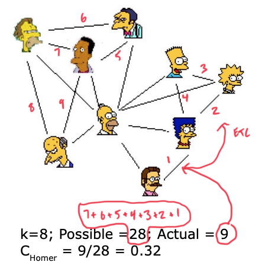

Glossary
Glossary for 697E coursework
A social network is a set of actors (or points, or nodes, or agents) that may have relationships (or edges, or ties) with one another. Networks can have few or many actors, and one or more kinds of relations between pairs of actors.
Week 1 - Introduction
Class lecture 1a: Nodes, Edges and Network Samples
(Note: some terms overlap somewhat or have context-dependent synonyms.)
- node / vertex
- a junction in a network where two or more lines (edges) intersect; a dot connecting lines.
- tie / edge / link / relation
- lines connecting nodes, which indicate some sort of connection or relationship.
- node / ego / actor
- \(i\) - the node being discussed or focused on; also note “Actors are described by their relations, not by their attributes.”1
- alter
- \(j\) - the node that \(i\) connects to
- network population
- \(n\) - the size of the population or count of nodes
With set notation, we define \(i\) as a set of \(n\) elements: \[i \in 1, 2, 3 \dots n\]
and \(j\) similarly as a set of \(n\) elements, except that \(j\) cannot equal \(i\) (a node cannot connect to itself): \[j \in 1, 2, 3 \dots n, i \ne j\]
- interaction threshold
- a measure to determine whether two entities have a sufficient connection to be considered to have a link between them
- snowball sample
- an entity group formed by starting with “a focal actor or set of actors”2 and “rolling outwards” to its connections until all nodes or actors (in a limited set) are located, or a decision to stop is made
- egocentric name generator
- a mode of building an entity group (an egocentric network) defined by connection to a single central node; like a snowball sample that doesn’t expand past the first set of connections
Class lecture 1b: Ties and Adjacency Matrices
- adjacency matrix
- an \(n \times n\) matrix depicting connections between \(n\) nodes as 0 or 1, where 1 is a connection (or vertex/edge) and 0 is the absence of one:
| A | B | C | D | |
|---|---|---|---|---|
| A | - | 0 | 1 | 0 |
| B | 0 | - | 1 | 0 |
| C | 1 | 1 | - | 0 |
| D | 0 | 0 | 0 | - |
- directed tie
- a relationship where \(W_{i,j} \ne W_{j,i}\), as might be used to represent a transfer of resources from one node to another; graphed with arrows
- symmetric tie
- a relationship where \(W_{i,j} = W_{j,i}\), with no direction; graphed with lines
- binary tie
- a tie where \(W_{i,j}\) is 0 or 1, as in the example above, indicating the absence or presence of a tie (also dichotomous)
- valued tie
- a tie where \(W_{i,j}\) is a value \(v\), indicating a weight or magnitude of the connection; may be graphed with line attributes such as weight, color, etc
Ties are symmetric or directed, and binary or valued.
Class lecture 1c: Edgelists
- edgelist
- a table indicating edges in a network, with at least “from” and “to” columns, and possibly additional columns for attributes or values
| From | To | Value |
|---|---|---|
| A | B | 5 |
| A | E | 2 |
| B | A | -1 |
| B | C | 4 |
| B | D | 2 |
| C | A | -4 |
Edgelists are more efficient in sparse networks, as they only list actual connections rather than being a matrix of all possible connections
Lazer (2011)
- homophily
- the idea that individuals who are similar to one another are more likely to form ties
- whole network data
- relational information about a whole set (or subset) of data, with all of the actors’ relations to each other considered
- egocentric data
- relational information about a set of nodes connected to one particular node and not to each other
- diameter
- the maximum degree of separation between any two nodes in the network
- one-mode data
- ties among one set (or category) of agent, such as nations in the context of trade
- two-mode data / bipartite data
- ties between different sets (or categories) of agents, such as ties between nations and international organizations; a network split into two parts, each of whose nodes only connect to nodes in the opposite part, not to nodes within its own part; “affiliation network” in Wasserman and Faust (1994)
Borgatti et al. (2009)
- sociometry
- “a technique for eliciting and graphically representing individuals’ subjective feelings toward one another”
- strength of weak ties (SWT) theory
- the theory that one is likelier to hear new information from people they aren’t closely connected to in a network (c.f. homiphily)
- centrality
- a family of positional properties of nodes in a network
- Freeman’s betweenness
- a type of centrality where a node is frequently along the shortest path between pairs of nodes, giving control over flow or power
- opportunity-based antecedents
- “the likelihood that two nodes will come into contact” - when considering the formation of ties
- benefit-based antecedents
- “some kind of utility maximization or discomfort minimization that leads to tie formation”
- node homogeneity
- a category of node outcomes referring to the similarity of nodes
- performance
- a category of node outcomes referring to some good (such as strong performance)
Week 2 - Network Structure
Class lecture 2a: Network Structure - Walks, Paths, and Distance
Connections between nodes:
- adjacent
- a direct connection between nodes; not necessarily bilateral in directed networks. A leading to B (“A adj B”) does not mean that B leads to A (“B adj A)
- reachable
- whether a node is reachable from another node, regardless of distance
- distance
- the number of ties (steps, edges) that must be traversed to reach a target node
- walk
- sequence (not path, see below) that connects two nodes, consisting of the nodes and edges
- trail
- a walk that can only go through each edge / tie once, but can hit the same node more than once
- path
- a trail that only hits each node and edge once; the start and end node may be the same
- geodesic distance
- the shortest path between two nodes; by definition, not a trail or walk because repeated segments wouldn’t be the shortest; with binary data, the number of edges between the nodes; with weighted data, might be a sum or some other calculation of “effort”
Class lecture 2b: Graph Substructures and Components
Network substructures
- dyad, triad, clique
- two, three, or four-or-more connected nodes
- complete graph
- a network where every node is directly connected to every other node
- connected graph
- a network where every node is indirectly connected to every other node
- unconnected graph
- a network where at least one node is unreachable
- component
- the set of all points that constitutes a connected subgraph within a network
- main component
- the largest component within a network
- minor component
- a smaller one, possibly one of many
- pendant
- a node with only one link or edge to a network, “dangling”
- isolate
- an unconnected node
Class lecture 2c: Dyad and Triad Census
- mutual dyad
- a dyad where both nodes connect to each other, as in an undirected network
- asymmetric dyad
- a dyad (in a directed network) where one node connects to another, but non-reciprocally (one way only)
- null
- a dyad of two unconnected nodes
- (empty / one edge / two path / triangle) triad
- a triad with zero, one, two or three edges between three nodes (all four possible permutations)
- balance theory
- the theory that two nodes connected to a common node will also develop connections to each other
- global transitivity index
- the proportion of triads in a network that are complete (with 3 connections between them)
There is a vocabulary for triads in directed networks describing the 16 possible permutations of ties (or the absence thereof) among 3 nodes, counting the number of mutual, asymmetric and null dyads, with direction indicators, like 003 or 120D - see the slide at 3:45
- vacuously transitive triad
- a triad where (to be continued…) (5 of 16 possibilities)
- intransitive triad
- a triad where (to be continued…) (7 of 16 possibilities)
- transitive triad
- a triad where (to be continued…) (4 of 16 possibilities)
(See Alhazmi, Gokhale, and Doran (2015))
Class lecture 2d: Transitivity and Clustering Coefficient
- local transitivity / local clustering coefficient
- the likelihood that the neighbors of a node are also connected to each other; the number of connections that do exist over the number of connections that could exist

In the example above, there are 8 nodes that Homer (center) could connect to; among those 8 nodes, there are \(7 + 6 + 5 + 4 + 3 + 2 + 1 = 28\) possible undirected connections (not connecting to Homer), and 9 of those 28 do exist, for a local clustering coefficient of \(9/28 \approx 0.32\).
- average clustering coefficient
- the average of the local clustering coefficient of all nodes in the network
Week 3 - Network Degree
Class lecture 3a: Degree
- (vertex) degree
- the number of links that a node has; the number of nodes it’s connected to
- degree distribution
- a distribution showing the number of nodes of a network that have each degree level
- indegree
- the number of links that a node receives in a directed network
- outdegree
- the number of links that a node sends in a directed network
Class lecture 3b: Centrality vs. Centralization
- centrality
- a measure of the prominence of one node relative to others; can be variously defined
- (degree) centrality
- proportional the the number of other nodes to which a node is linked
- centralization
- a property of a graph or network, referring to its overall cohesion; comparing most central point to all other points; ratio of the actual sum of differences to the maximum possible sum of differences
Class lecture 3c: Network Density
- network density
- number of ties as a proportion of the maximum possible number of ties; varies from 0 to 1, calculation will vary by whether network is undirected or directed (twice as many potential connections)
Week 4 - Status & Eigenvectors
Class lecture 4a: Status and Hierarchy
- closeness centrality
- the sum of geodesic distances (shortest paths) to all other points in the graph. Divide by \(n-1\), then invert. A measure of how close a node is to all of the other nodes in the network.
Class lecture 4b: Status and Prestige
- prestige
- signal of the quality of a node, of a node’s visibility within the network
- eigenvector centrality
- “takes into account the centrality of other nodes to which a node is connected. That is, being connected to other central nodes increases centrality.” Takes into account the centrality of the nodes a node is connected to, considering the importance of the connected nodes and not just their quantity or path length. A node with high eigenvector centrality is connected to significant numbers of other highly central nodes. \[\lambda \text{c} = \text{Wc}\]
- Bonacich Power
- “A closely related concept, but includes a weighting factor that emphasizes global vs. local structure (and negative connections)” In contrast to eigenvector centrality, penalizes nodes connected to other well-connected nodes, under the theory that being connected to strong or powerful nodes means a node has less influence and power than it would if it were connected to fewer or weaker nodes. \[\text{c}(\alpha, \beta) = \alpha(\text{I} - \beta\text{W})^{-1}\text{W1}\]
Class lecture 4c: Hubs and Bridges
- bridge
- a node with few ties to central actors
- hub
- a node with many ties to peripheral actors
- reflected centrality
- the degree of centrality that a node receives from a connected node that is due to that node’s centrality. If A has influential friend B, then A’s eigenvector centrality will be higher; reflected centrality is the portion of A’s centrality that comes from B’s centrality.
- derived centrality
- the remainder of the eigenvector centrality that A receives from B in the example above, that is not due to B’s centrality but just from B being a connected node
Reflected and derived centrality can be represented in the following matrix by Mizruchi et al:
| High reflected centrality | Low reflected centrality | |
|---|---|---|
| High derived centrality | Cosmopolitans | Pure bridges |
| Low derived centrality | Pure hubs | Peripherals |
The four prototypes are:
- cosmopolitans
- well-connected nodes that are connected to other well-connected nodes; the “cool kids” table
- pure hubs
- well-connected nodes that are connected to nodes that are not well-connected; the cool kid who talks to uncool kids
- pure bridge
- a node connected to few but high-centrality nodes; a friend of the cool kid with few other friends
- peripheral
- a node with few and low-centrality connections; me and my D&D nerd friends in high school
Class lecture 4d: Status and Core/Periphery Networks
- betweenness centrality
- a count of the number of shortest paths between nodes that pass through another node